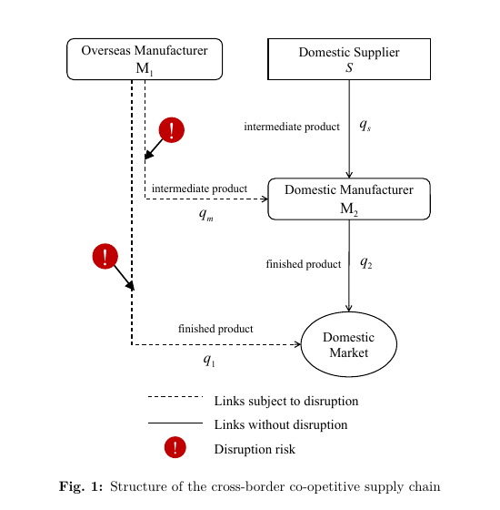
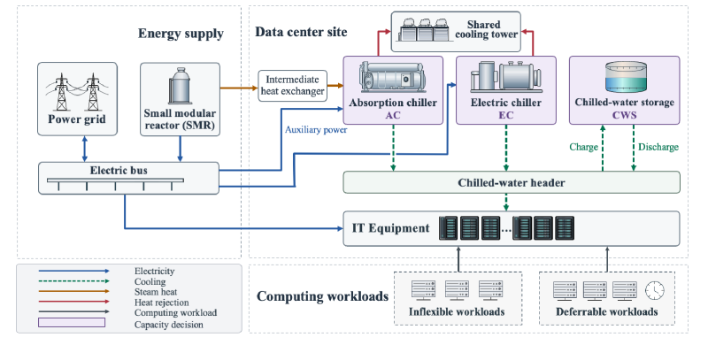

Master
Master of Management in Technology Economy and Management, CUFE
Weighted Average: 92.33/100 · Rank: 1/10
yafeishi03@gmail.com
Seeking Ph.D. opportunities for Fall 2027
I am a Master's student in Technology Economy and Management at the Central University of Finance and Economics, advised by Prof. Shandong Mou. Prior to my Master's studies, I received my Bachelor of Management in Supply Chain Management from the same university.
Currently, my research interests focus on intelligent systems modeling, optimization, and control, with applications in robotic systems, data center energy management, and healthcare operations.
Master of Management in Technology Economy and Management, CUFE
Weighted Average: 92.33/100 · Rank: 1/10
Bachelor of Management in Supply Chain Management, CUFE
Weighted Average: 90.11/100 · Rank: 3/38
Advanced Operations Research (92), Business Data Analysis (95), Supply Chain Modeling & Optimization (96), Logistics Modeling & Simulation (97), Applied Statistics (93), and Python Programming (96)
IELTS Academic: 7.0
Listening 7.0 · Reading 8.5 · Writing 6.0 · Speaking 6.0 (Jul. 2026)
(Research in progress. † indicates corresponding author)


We study routing and synchronized service planning for heterogeneous mobile clinics screening rural patients for multiple chronic conditions. The solution approach includes an adaptive large neighborhood search algorithm.

We examine backup supplier qualification and sourcing decisions when delivery disruptions and co-opetition interact.

We develop a joint investment and scheduling model for SMR-powered data-center cooling and examine how workload flexibility and electricity prices affect chiller and thermal-storage investments.
(† indicates corresponding author)
We develop a hypergraph-based optimization framework for adaptive plan verification and budgeted skill-library configuration. The model captures skill complementarities and alternative plans to maximize weighted task reachability while minimizing deployment cost.
We develop a distributed optimization model for multi-UAV collaborative inspection under coupled safety constraints and limited communication budgets, together with a coalition-based coordination algorithm.
Undergraduate and MBA courses, Business School, Central University of Finance and Economics
Student Branch of the Red Cross Society, Central University of Finance and Economics
Hongye International Relations Society, Central University of Finance and Economics
Associate Professor, Ph.D. Supervisor, and Head of the Department of Supply Chain and Operations Management
Business School, Central University of Finance and Economics
Professor and Ph.D. Supervisor, Department of Supply Chain and Operations Management
Business School, Central University of Finance and Economics
Assistant Professor, Department of Supply Chain and Operations Management
Business School, Central University of Finance and Economics
jingchuan.chen@cufe.edu.cn Personal Homepage University Profile